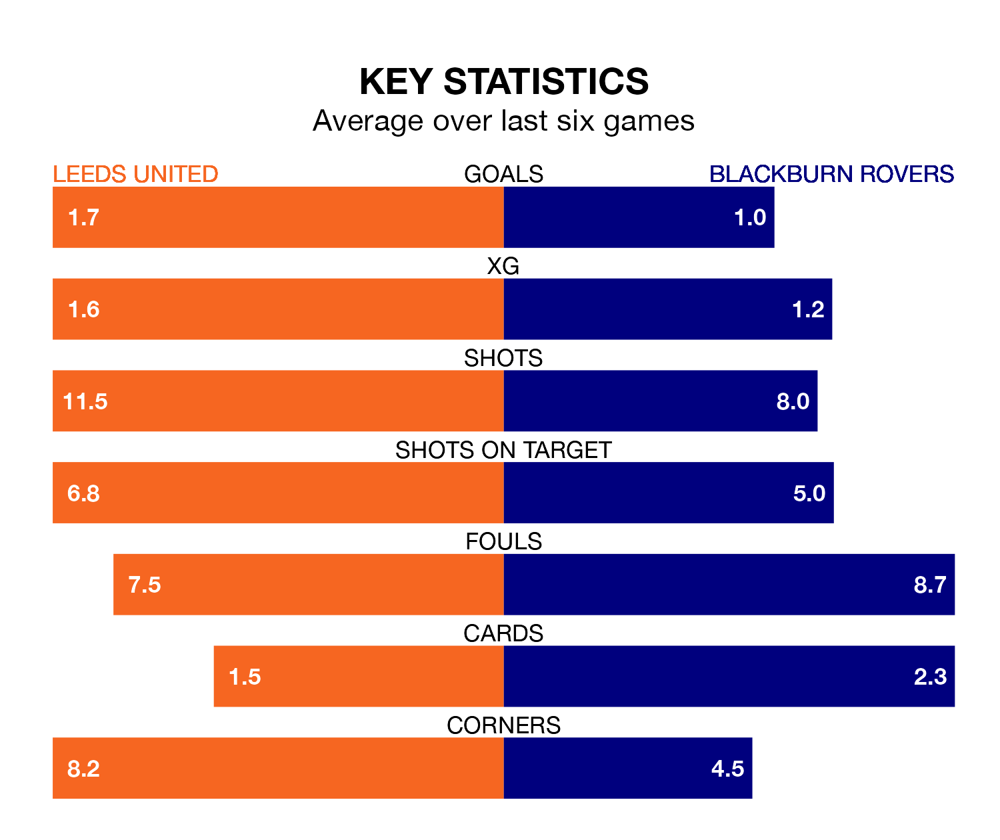

Leeds United are heavy favourites to keep all three points at home in Saturday lunchtime's kick-off against Blackburn Rovers.
Leeds, who sit third in EFL Championship with 42 games played, are priced at 1.3 to seal victory at Elland Road.
Sitting 15 places and 41 points behind them in the table, Blackburn are 7.2 to win with *Betting Company*, while the draw is at 4.8.
With 76 goals in 42 games so far this season, Leeds are scoring more than average in the league with 1.8 goals per game. And they are conceding fewer than average, letting in 33 goals at a rate of 0.8 per game.
Blackburn, meanwhile, are average scorers, with 1.3 goals per game. They have conceded 1.7 goals per game.
In Samuel Szmodics, Rovers have the league's sharpest shooter so far this season. He has notched 23 goals in 40 appearances.
His goal rate of one every 154 minutes is quicker than that of Crysencio Summerville, United's top scorer with a goal every 187 minutes, and a total of 17 goals in 39 games.
In the last 10 years, Leeds and Blackburn have played each other on 12 occasions. Leeds won eight of them and Blackburn four.
On average, Leeds scored 1.6 goals and Blackburn 1.3 in those matches.
Their last meeting was on December 9, when Leeds won 2-0 away.
The hosts are in reasonable form in EFL Championship, with three wins and two draws from their last six games.
With a win and three draws over that period, the away team's form is worse – they have taken six points from 18, compared to Leeds's 11.
Leeds's last match was on Tuesday, a 0-0 draw against Sunderland.
Blackburn lost 5-0 against Bristol City last time out, on Wednesday.
Updated: 10:01 (UTC), 12/04/24